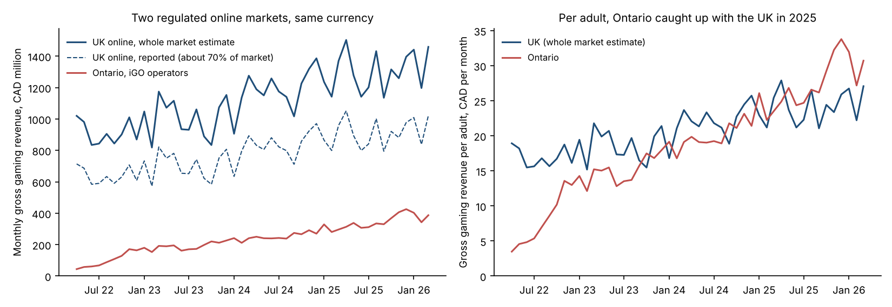
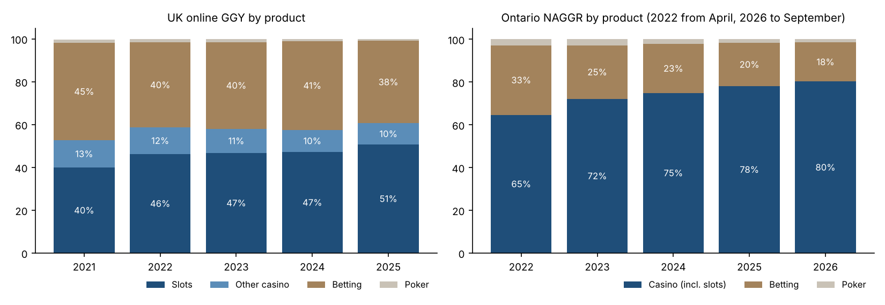
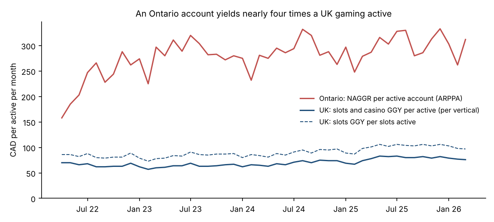
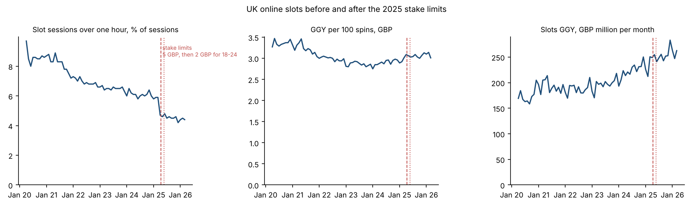
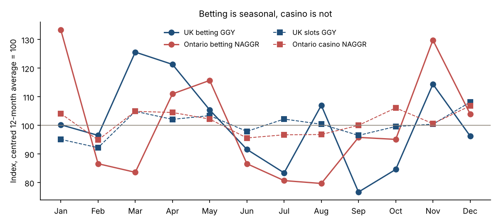
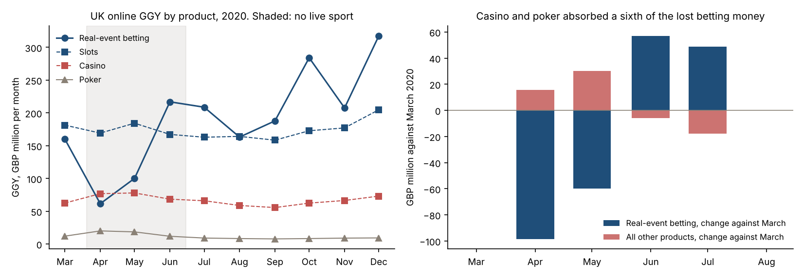
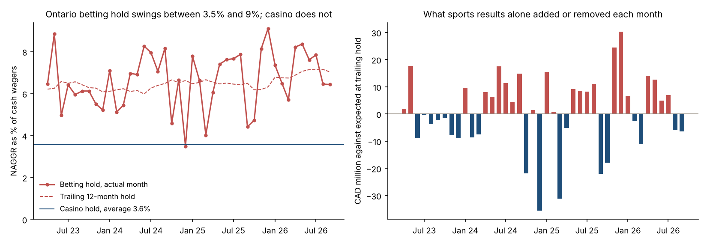
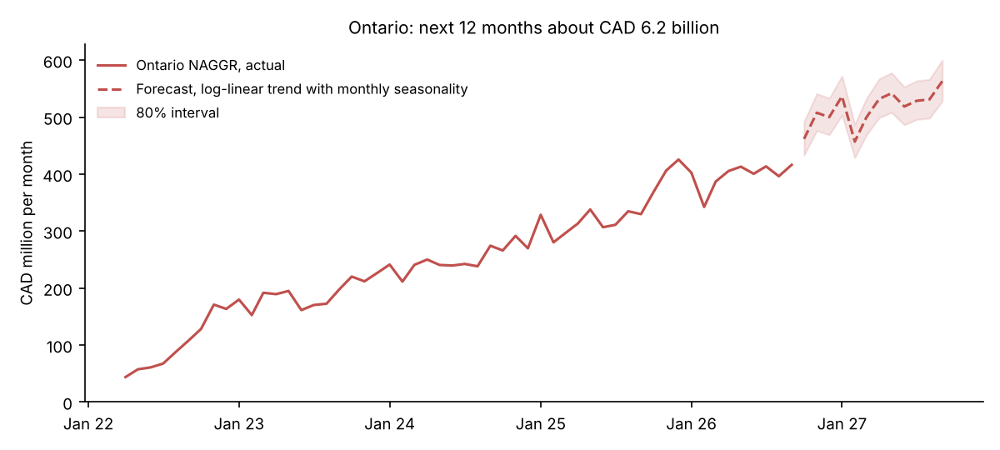

Market analysis on regulator data, November 2026
Two regulated online gambling markets, side by side.
The UK is the oldest regulated online gambling market in the world. Ontario is one of the youngest, open since April 2022. Both regulators publish monthly market data openly, and this analysis uses nothing else. I put them in one currency and asked the questions an operator or an investor would ask: how big, what people play, what a player is worth, what regulation changed, how seasonal, what happens when sport stops, how much results alone move revenue, and where Ontario goes next.
How it was done
- Sources
- UK Gambling Commission operator data for online gambling, monthly, March 2020 to March 2026. iGaming Ontario market performance report, monthly, April 2022 to September 2026. Bank of Canada daily exchange rates. All three are public datasets released for reuse: the Gambling Commission data under the Open Government Licence, the others on the publishers' websites with attribution. No personal or operator-confidential data is involved.
- Preparation
- A Python script reads the two regulator workbooks and the exchange rate files and writes tidy monthly tables. Pounds become Canadian dollars at the monthly average rate.
- Definitions
- UK figures are gross gambling yield from operators covering about 70% of the market, grossed up to a whole-market estimate where stated. UK actives are counted per product and never summed. Ontario figures are non-adjusted gross gaming revenue and cash wagers for all iGO operators, with unique active accounts.
- Analysis
- PostgreSQL views and queries for market size, product mix, monetization, slot sessions around the 2025 stake limits, seasonality, the 2020 lockdown and betting hold volatility. Python for the statistics, the charts and a seasonal trend forecast.
- Caveats
- GGY and NAGGR are close but not identical measures. Per-adult figures use 53.9 million UK adults and 12.6 million Ontario adults, rounded. The UK whole-market figure is an estimate.
What the data shows
Per adult, Ontario has overtaken the UK
CAD 28per adult per month in Ontario, against CAD 24 in the UK, twelve months to March 2026
In absolute terms the UK online market is still almost four times Ontario: about CAD 15.8 billion of gross gaming revenue in the twelve months to March 2026 against CAD 4.3 billion. Divide by adults and the order flips. Ontario started at CAD 3.50 per adult in its first month, drew level with the UK during 2025 and has been above it every month since September 2025. Ontario grew 34% year on year in 2025; the UK grew 9% in Canadian dollar terms.

Both markets are turning into casino markets
In the UK slots went from 40% of online GGY in 2021 to 51% in 2025 while real-event betting fell from 45% to 38%. In Ontario the shift is faster: casino went from 65% of revenue in 2022 to 80% in 2026 and betting from 33% to 18%. Ontario's betting hold, revenue as a share of wagers, rose from 6.3% to 7.2% over the same years, so sportsbooks are earning more per dollar wagered even as their share of the market shrinks.

An Ontario account is worth nearly four UK actives
CAD 304NAGGR per active account per month in Ontario; about CAD 80 of slots and casino GGY per UK active
An active Ontario account wagers roughly CAD 7,300 a month and leaves about CAD 304 with the operator. The comparable UK figure, slots and casino GGY per active converted to dollars, is about CAD 80. Part of the gap is definitional: a UK active is counted once per product and a casual bettor counts, while an Ontario account that wagered anything counts once. Part of it is real: Ontario is a casino-heavy market with a player base that is still small relative to its population, so revenue is concentrated on fewer, heavier players.

The UK slot stake limits changed session length, not revenue
6.0% to 4.5%share of slot sessions longer than an hour, ten months before against ten months after the limits
Online slot stakes were capped at GBP 5 per spin from 9 April 2025 and GBP 2 for players aged 18 to 24 from 21 May 2025. The share of sessions longer than an hour had been drifting down by about half a point a year; in April 2025 it dropped 1.5 points in a single month and stayed there, which at current volumes is about 10 million fewer long sessions over ten months. Revenue did not follow. Slots GGY grew 13.7% year on year in the ten months before the limits and 10.7% after, a difference that is not statistically distinguishable at this sample size, and GGY per 100 spins actually rose 4.4%. Players spin more often at lower stakes; operators earn the same.

Betting is seasonal, casino is not
UK betting peaks in March, with the Cheltenham Festival and the run-in of the football season, at 26% above its centred twelve-month average, and bottoms in September at 23% below. Ontario betting peaks in January and November, with the NFL playoffs and the autumn overlap of NFL, NBA and NHL, at about 30% above average, and bottoms in July and August at 20% below. Slots and casino stay within about 8% of their average all year in both markets. For an operator that is the difference between a product line whose marketing budget needs a monthly profile and one that can be planned flat.

When sport stopped in 2020, casino did not catch the money
16%of the betting revenue lost in April 2020 showed up in other products
The UK data starts in March 2020, so it holds a natural experiment nobody would design. Live sport stopped in the middle of March and came back in the middle of June. In April real-event betting GGY fell 62% against March, from GBP 160 million to 62 million, and the number of people who placed a bet fell from 4.6 million to 2.1 million. Casino rose 23%, poker 67%, virtual and esports betting roughly doubled from a small base, slots did not move. Added together, every other product gained GBP 16 million against a betting shortfall of GBP 98 million. The whole online market was down 20%. In June, the first full month with football back, betting was 36% above March and the market 11% above, and poker and casino were back where they had started within two months. Bettors are not casino players who happen to be between matches; when their product disappears, most of the money leaves with them, and it comes back the moment the product does.

Sports results move Ontario betting revenue by tens of millions a month
3.5% to 9.1%monthly betting hold in Ontario; casino stays between 3.1% and 4.0%
Hold is revenue as a share of wagers, and in sports betting it depends on who wins. Ontario's betting hold averages 6.55% with a standard deviation of 1.3 points, a fifth of its level; casino hold averages 3.56% with a standard deviation of 0.2 points, a twentieth of its level. Measured against the trailing twelve-month hold, the month's results add or remove CAD 11 million on average, with a worst month of minus 36 million in December 2024 and a best of plus 30 million in December 2025. On the last twelve months of wagers one point of hold is worth CAD 127 million a year. The noise does partly cancel over a year: across any twelve-month window it nets to between minus 61 and plus 63 million, which is about 5% of annual betting revenue at 80% confidence. Underneath the noise the hold is drifting up, from 6.3% in 2022 to 7.2% in 2026, about a quarter of a point a year, the signature of parlays and same-game bets taking a larger share of the handle.

Ontario: about CAD 6.2 billion in the next twelve months
CAD 6.2 bnforecast NAGGR, October 2026 to September 2027, 80% interval 5.8 to 6.6
A log-linear trend with month effects, fitted on April 2024 to September 2026, gives underlying growth of 2.2% a month, about 30% a year, with a residual standard deviation of 5%. It projects CAD 6.2 billion of NAGGR for the next twelve months against 4.8 billion in the last twelve. At Ontario's 20% revenue share that is roughly CAD 1.2 billion for the province if the trend holds. The main risk is deceleration: year-on-year growth has already come down from 155% in 2023 to around 25% in mid 2026, and a straight trend does not bend. I would revisit the fit each quarter and treat the low end of the interval as the planning case.

Recommendations
For an operator entering Ontario: plan a casino-led product with sports as the acquisition hook, since casino is 80% of the market's revenue and growing. Budget sports marketing against the betting calendar, with November and January about 30% above the average month and July and August 20% below, rather than flat. Model player value on revenue per account, about CAD 300 a month, not on wagers, because hold differs by a factor of two between products. Plan betting revenue as a range: at the trailing hold the twelve-month figure carries about plus or minus 5% of results noise, and a single month can miss by a third, so a monthly betting target that does not state its hold assumption is not a target.
For a UK operator facing further stake or deposit limits: the 2025 experience says session behaviour responds immediately and revenue adapts, so the question to model is the change in spins per session and the shift of volume between stake bands, not a headline revenue hit. And the 2020 experience says a loss of the sports product is not cushioned by casino: only about a sixth of lost betting revenue moves across, so a sports disruption scenario should be modelled as a near-total loss of that line for its duration, with a full and immediate recovery after.
For the province: the forecast puts Ontario at CAD 6.2 billion of NAGGR between October 2026 and September 2027, roughly CAD 1.2 billion of provincial revenue at the 20% share, with an 80% range of 1.16 to 1.32 billion. The low end is the planning case, because growth is decelerating and the trend model does not bend. For anyone comparing markets: put them per adult and in one currency first. In absolute terms the UK is four times Ontario; per adult Ontario is already ahead.